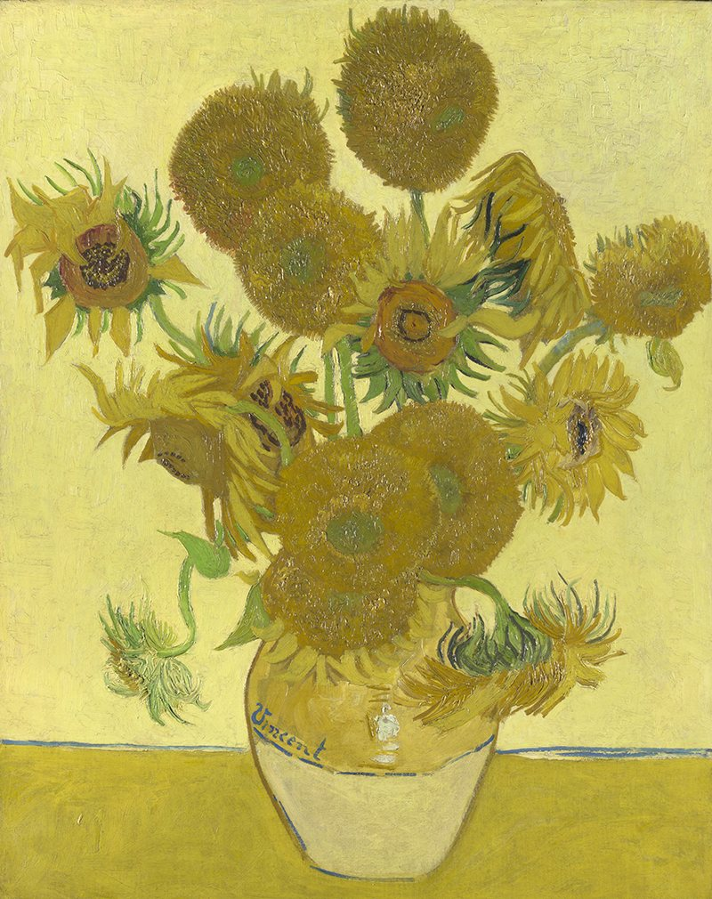
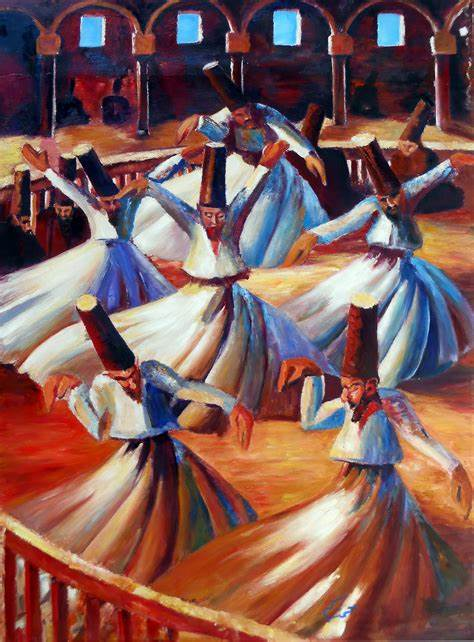

Beautiful art led us to peace.
Van gogh
Van gogh
Van gogh was a Dutch painter, classified as one of the artists of impressionism He went to paint to express his feeling and affection In the last five years of his life, he painted more than 800 oil paintings.
his most famous works:
- potato Eaters.
- is an oil painting by Dutch artist Vincent van Gogh painted in April 1885 in Nuenen, It is in the Van Gogh Museum in Amsterdam. The original oil sketch of the painting is at the Kröller-Müller Museum in Otterlo
- sunflowers
- is the title of two series of still life paintings by the Dutch painter Vincent van Gogh. The first series, executed in Paris in 1887, depicts the flowers lying on the ground, while the second set, made a year later in Arles, shows a bouquet of sunflowers in a vase.
- starry night
- is an oil-on-canvas painting by the Dutch Vincent van Gogh. it depicts the view from the east-facing window of his asylum room at Saint-Rémy-de-Provence, just before sunrise



On the other side of the world.
A great Egyptian painter who practiced plastic art
Mahmoud saeed.
Mahmoud is a great Egyptian painter who practiced plastic art and excelled in the aspect of his work in the judiciary. Who founded the modern Egyptian school of plastic arts, He has a subjective style, and his paintings are characterized by the strength of composition, construction and the national character of the Egyptian environment.
his most famous works:
- Banat bahry
- One of Mahmoud Said's most famous works is Banat Bahry, which he presented in 1937, and it is one of his most famous paintings that was exhibited at the Egyptian Pavilion at the International Exhibition held in New York in 1937.
- al-drawesh
- A painting by the Egyptian artist Mahmoud Said. This painting was painted in 1929. This painting, one of Mahmud Said's early works, shows six dervishes with similar features and identical clothes, with differences in their respective postures performing religious remembrances in Ottoman times.
- Al-shadof
- This painting expresses an ancient Egyptian method of irrigating the land through the use of "shadof", which is a tiring method and reflects the amount of misery faced by the Egyptian peasant. The painting carries a lot of features of rural life, which makes us feel a kind of joy through the elements of the painting man, woman and donkey.

